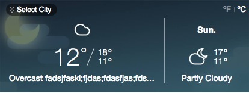

31 July 2016
flex布局，可以简便，完整，响应式的实现各种页面布局。目前，所有现在浏览器都已经支持，我们可以放心的使用这种方式来进行布局。
flex布局的基础知识，不在这里赘述，大家可以移步阮一峰关于Flex布局的教程
这里整理下工程实践中经常遇到，但又不为大家所熟知的几个小细节
troule 1
如下图所示，关闭按钮 icon slogan 从左往右依次排列，Open App按钮居右
flex的主轴布局justify-content中有flex-start(左对齐) flex-end(右对齐) center(居中对齐) space-between(两端对齐) space-around(两侧留白)
flex同时提供了交叉轴的对齐方式align-items以及子元素的align-self
以上属性都无法满足我们图中的布局要求，stackoverflow告诉我只要给想居右的元素设置属性margin-left: auto就可以完美实现了
.banner-container {
display: flex;
align-items: center; /*垂直居中*/
}
.guide-btn {
margin-left: auto;
}如果要求某个按钮居左，其他按钮从右往左排列，思路也是基本类似，我就不再这里多说了。
trouble 2
如下图所示，当天天气可伸缩，第二天天气根据某个对齐条件指定宽度，当天气情况描述超长时需要进行截断。
天真的想法是这样的
.weather-info-container {
display: flex;
}
.today-weather-container {
flex-grow: 1;
flex-shrink: 1;
}
.today-weather-container .weather-text {
overflow: hidden;
white-space: nowrap;
text-overflow: ellipsis;
}
.future-weather-container {
width: 141px;
}看到真相的我，眼泪掉下来，这是什么鬼？？？
最后搜索引擎告诉我一个解决方案，先把容器宽度设为最小值1px，然后让容器自然拉伸，问题就得以解决了。
.weather-info-container {
display: flex;
}
.today-weather-container {
flex-grow: 1;
flex-shrink: 1;
width: 1px; /* 加上这行就好了 */
}
.today-weather-container .weather-text {
overflow: hidden;
white-space: nowrap;
text-overflow: ellipsis;
}
.future-weather-container {
width: 141px;
}前端总是充满了未知和挑战，当你征服未知后，你还会有更多的未知和挑战。